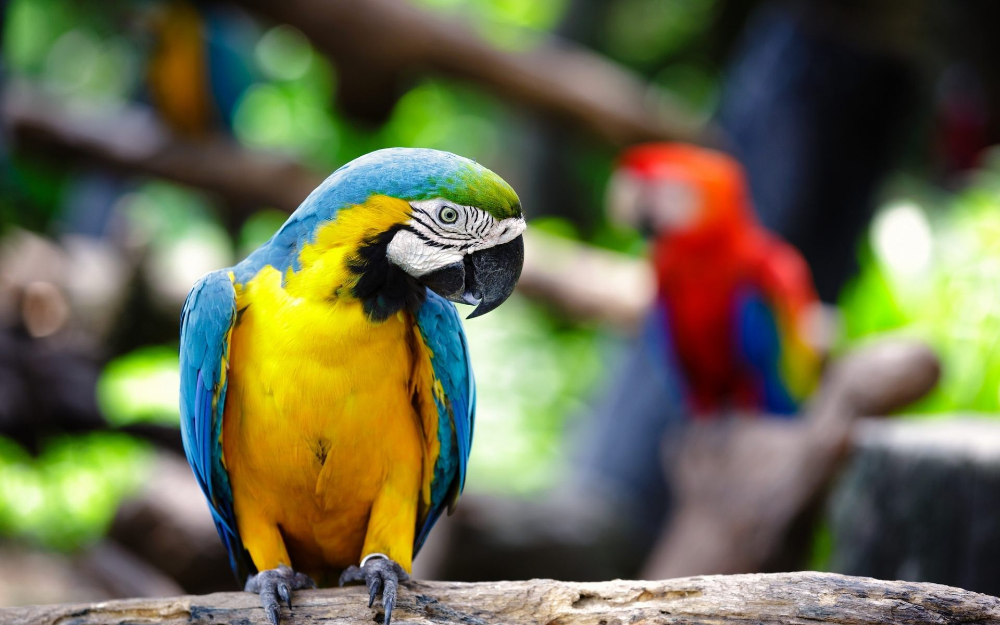
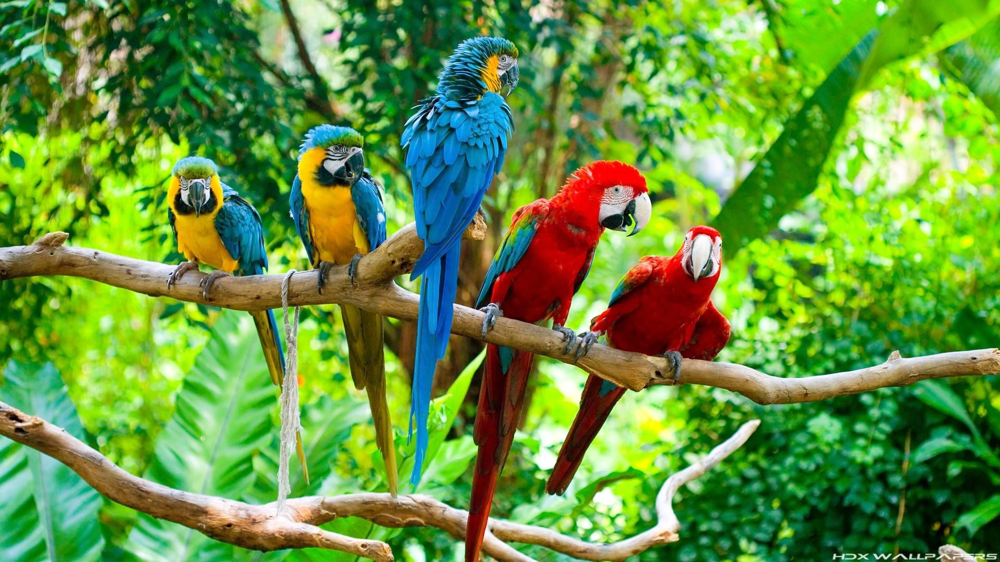
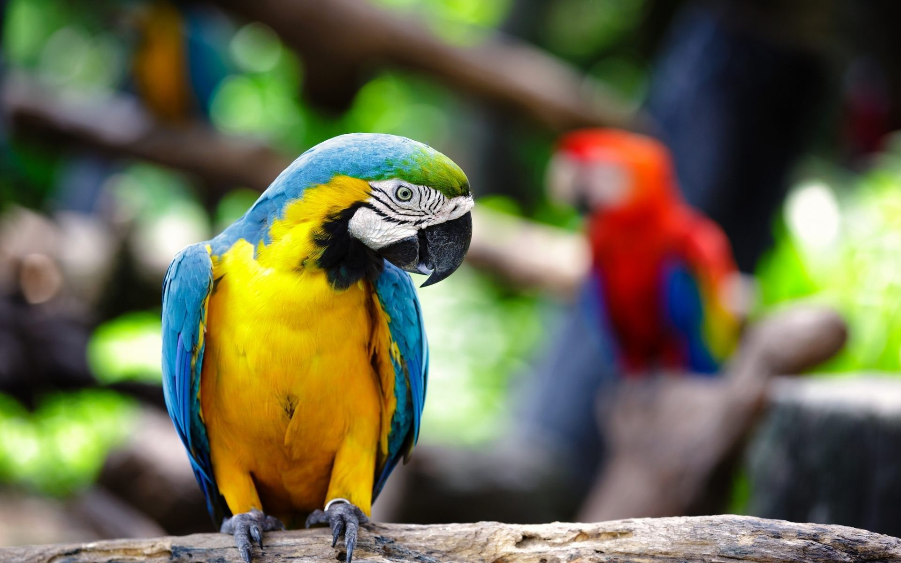
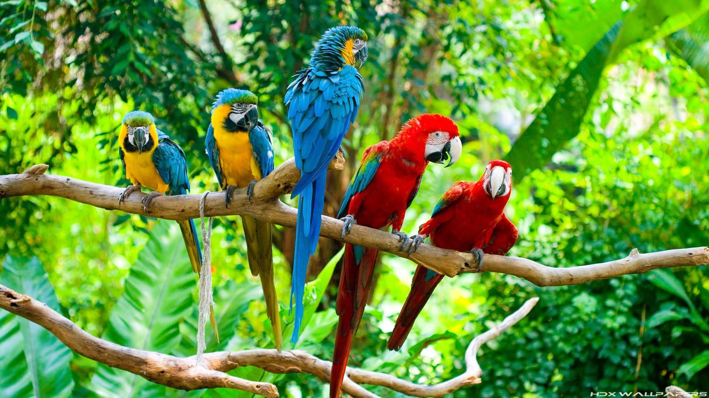

Las guacamayas rojas son pericos grandes de colores rojo y amarillo que viven en
Centroamérica y Sudamérica. Las guacamayas de Sudamérica se ven diferentes a las que viven en
Centroamérica. La guacamaya roja de Sudamérica, Ara macao macao, vive en Brasil, Colombia,
Ecuador y Perú, y tiene algo de verde en sus alas. La guacamaya roja de Centroamérica, Ara macao
cyanoptera, se encuentra en México, Guatemala y Belice, es más grande que la sudamericana y
tiene color azul en sus alas.
La guacamaya roja vive en bosques de lluvia no perturbados, se alimenta de frutos, nueces,
flores y néctar. A veces se alimenta de fruta verde y de nueces que otros animales no consumen.
También consumen arcilla de algunos bancos ribereños. Nadie está seguro de por qué hacen eso,
pero la arcilla parece ser importante para ellos, ya que se arriesgan a ser capturados por felinos
silvestres y otros depredadores cuando se posan en el suelo para consumirla.
Las guacamayas anidan en cavidades en los troncos, lo cual les provee protección a los
adultos y a los jóvenes. Cada par de guacamayas rojas cría solo uno o dos polluelos por año, y estos
permanecen con sus padres por uno a dos años. Esto significa que solo algunos adultos tendrán crías
en cada año y que el número de aves en la población no aumenta muy rápido.
Dieta
- Frutas
- Nueces
- Semillas
- Brotes tiernos
- Insectos
Depredadores
- Monos
- Jaguares
- Águilas
- Halcones
- Algunas serpientes
 


